Agent-centric-real-to-sim · 归档于 2026-11-05
ScalableReal2Sim
Scalable Real2Sim: Physics-Aware Asset Generation Via Robotic Pick-and-Place Setups
arXivPDF Project pageCode Dataset
归档到 Agent-centric real-to-sim：机器人亲手处理真实物体，产出带 mass 和 inertia 的仿真 asset。
TL;DR
- Problem
- 相机看不到物体的质量分布；已有 Real2Sim 只给几何，physics 靠人量或靠 LLM 猜。
- Idea
- 把 asset 生成塞进 pick-and-place：抓起来转给相机看，再走一条 excitation trajectory，用关节力矩“抓前抓后做减法”称出物体。
- Result
- mass 和 CoM 能到百分之几，inertia 不可靠。mass / CoM / inertia 误差：基准 1.34 % / 2.15 % / 42.35 %（Table I），3D 打印瓶端到端 1.23 % / 6.33 % / 358.6 %（§V-B）。
Problem
质量分布藏在物体里：相机拍不到，人工一件件量又不能 scale
Running example · 后面每个 stage 都跟着它走
一个芥末瓶（Fig. 1、2、3、7 都用它）：料箱里一个未知物体 + 机械臂的 joint position / joint torque + 一台 640×480 RGBD 相机 → 想要：能直接导入 Drake 的 asset，含 textured mesh、convex collision、mass / CoM / inertia。
论文里有两个芥末瓶，数字别混：几何用 YCB 瓶（Chamfer 0.93 mm），惯性用 3D 打印瓶（真值 427.1 g）。
flowchart LR IN["芥末瓶
重心和惯量未知"] --> A1["Geometry-only
Wang, GSO, Torne"] A1 --> AX["只有 mesh
m, CoM, I 全空"]:::gap IN --> B1["Generative AI
Gen2Sim"] B1 --> BX["LLM 给 plausible 值
不是这个瓶子的"]:::gap IN --> C1["Wrist F/T 辨识
Nadeau [17]"] C1 --> CX["要加腕部传感器
OLS: I >500 %"]:::gap IN --> D1["NeRF / 3DGS 原样用
静态场景假设"] D1 --> DX["物体动、夹爪挡
密度外溢或破洞"]:::gap
前两条“坏在哪”是推断：依据 §II 的描述，论文没有在芥末瓶上跑这些方法，也没有数字。第三条的数字来自 Table I，测试物是 [17] 的可变惯量 test object，不是芥末瓶；同表 PMD-25K 好很多（29.11 %），但需要 F/T 和物体 shape/pose 先验。第四条来自 Fig. 3 (g)(h)，只有定性图。
根本问题：质量分布只有在物体被加速时才通过力暴露出来。 这篇的切入点：机器人本来就要抓这个物体，那就把它的关节力矩当秤，空手和带物各辨识一次，差值就是物体。
Related work
| 相关工作 | 解决什么 | 怎么解决 | 和本文的区别 |
|---|---|---|---|
| 同一问题 · 别的解法 | |||
| Geometry-only Real2Sim Wang [4], Downs/GSO [5], Torne [6] | 给真实物体做数字副本 | depth 建 mesh；定制扫描硬件；UI 人工建模 | 偏静态或要人动手，无 physics → 本文全自动并带 inertial 参数 |
| Generative AI asset Gen2Sim [9], Zero-1-to-3 [10], Luma Genie [11] | 大规模造 asset | diffusion 生成 mesh，LLM 报尺寸和属性 | 更好 scale，但是想象的近似 → 本文从这件真物上测 |
| Payload ID with F/T Nadeau [17]: OLS, PMD-25K | 直接辨识末端负载 | 腕部 force-torque sensor；PMD 用 shape/pose 先验 | 要腕部硬件和先验 → 本文只用 joint torque，代价是 inertia 更差 |
| 相似做法 · 用在别的问题或问题的一部分 | |||
| Joint-torque 差分 + excitation design（本文所属 family） Khalil [16]; LMI [18], [19]; [21]–[23] | 工业臂的机器人和负载参数 | 先辨识机器人，带负载再辨识取差；Fourier 轨迹最大化信息 | 常写死机器人、不支持任意约束 → 本文 Drake 实现，black-box augmented Lagrangian |
| Photometric reconstruction NeRF [7], 3DGS [8], Neuralangelo [13] | 静态场景的高质量重建 | 已知相机位姿 + photometric loss | 整场景、静止 → 本文把物体当世界，alpha-transparent + gripper mask |
来源：论文 §I、§II、§III-D 和 §V-B 的对比，未另行检索。ASID [3] 在 §I 只有一句（侧重 dynamic parameter identification），论文没写具体区别，未单列。
Level 1 · Big picture
一次抓取做两件事：转给相机看，再甩一条轨迹让关节力矩称它
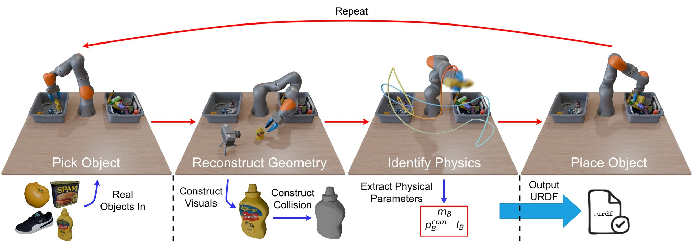
| 图中符号 | 白话 | 芥末瓶上的值 |
|---|---|---|
m_B | 物体的质量 | 3D 打印瓶真值 427.1 g，估计误差 1.23 % |
p_B^com | 物体的质心位置 | 误差 6.33 %（论文未给绝对值） |
I_B | 3×3 对称的转动惯量矩阵 | 误差 358.6 %（论文未给矩阵） |
怎么读这张图
- Pick Object：Real Objects In 的物体都在第一个 bin，机器人抓起一个，比如芥末瓶。
- Reconstruct Geometry：夹着瓶子在静止相机前转。Construct Visuals 出黄色 textured mesh，Construct Collision 出灰色简化形状。
- Identify Physics：彩色曲线就是 excitation trajectory，瓶子被夹着沿它运动，红框里是提取出的三个物理量。
- Place Object / Output URDF：瓶子放进第二个 bin，几何和物理合成一个文件。
- Repeat：顶部红箭头回到开头，直到第一个 bin 空。
flowchart LR I["Input
瓶子 + q, τ + RGBD"] --> M1["转给相机看
mesh + convex"] I --> M2["力矩做减法
m, CoM, I"] M1 --> O["Output
simulatable asset"] M2 --> O
到底需要哪些传感器
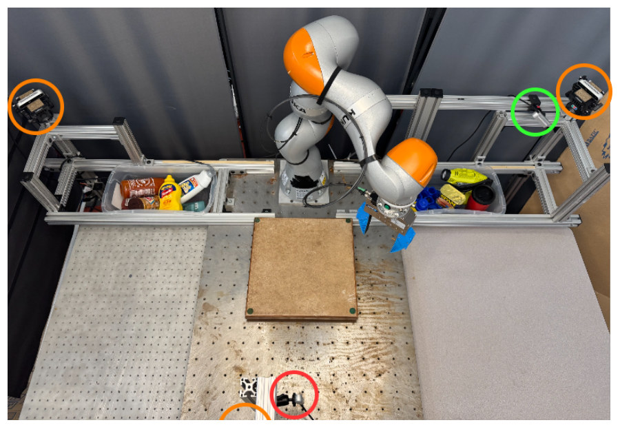
| 传感器 | 用途 | 是否必需 |
|---|---|---|
| Joint-torque sensors 机械臂自身的，实验用 KUKA LBR iiwa 7 | τ，物理辨识唯一的力来源 | 必需。§II：没有它的机器人可改用腕部 F/T，但本文没有实现这条路 |
| Joint position | q；速度和加速度靠两次差分加 low-pass，没有单独的传感器 | 必需 |
| RealSense D415（红圈） 640×480 RGBD | 扫描物体，相机位姿无需已知 | 必需。摘要说“an external camera”指的就是这类 |
| RealSense D435（绿圈）+ 3 台 D415（橙圈） | bin picking，workspace observations | 这个实验台在用，台上共 5 台相机；摘要写 only an external camera，论文没说去掉它们能否照跑 |
| 不需要 | 腕部 F/T、电子秤、物体 shape 或 pose 先验 | 但扫描区加了一块平台，给 re-grasp 扩大 iiwa 的运动范围（Fig. 4 caption） |
Level 2 · Stages
6 个 stage，其中 Stage 4 每个环境只跑一次
flowchart TD S1["1 · Scan
N 帧 + 两种 mask"] --> S2["2 · Visual mesh
Chamfer 0.93 mm"] S2 --> S3["3 · Collision
convex pieces"] S4["4 · Robot ID（一次）
10 条轨迹取平均"] --> S5["5 · Object ID
427.1 g，误差 1.23 %"] S1 --> S5 S2 --> S5 S3 --> S6["6 · Asset + place
URDF，下一个物体"] S5 --> S6 click S1 href "#stage-1" click S2 href "#stage-2" click S3 href "#stage-3" click S4 href "#stage-4" click S5 href "#stage-5" click S6 href "#stage-6"
点击 stage 展开 Level 3 细节。S2 → S5 这条线是 ICP：把惯性参数转到 mesh 的 object frame。
Level 3 · Details
每个 stage 的细节
Stage 1 Scan：抓起来，绕两条轴转给相机看 料箱里的物体 → N 帧 RGBD + object / gripper masks
- Why：一次抓取总会挡住一块，底面也永远看不到。
- How：antipodal grasp [24] 抓起，用 primitive motions 绕一条轴转，re-grasp，再绕垂直的轴转。
- Grasp pair：按 antipodal quality 加 pair score 排序；pair score 看两次抓取多垂直、离多远，避免互相遮挡。
- 选帧：先每 K 帧取一帧，再反复从剩余帧里挑 DINO 特征 cosine distance 最大的一帧，直到 N 帧。
- Masks：SAM2 video segmentation 给出 object masks 和 gripper masks，两者后面用法不同。
- 论文没报 K、N 的取值。
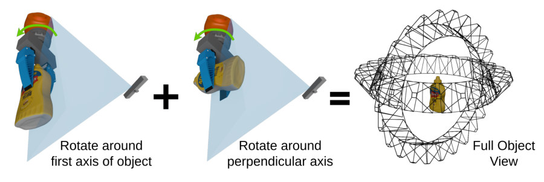
怎么读这张图
- Rotate around first axis of object：夹着瓶身绕第一轴转，绿箭头是转向，蓝色锥是相机视野。
- Rotate around perpendicular axis：re-grasp 后瓶子横过来，绕垂直轴转。
- Full Object View：黑色线框是两次旋转累积的相机视角，合起来把瓶子包住。
flowchart LR a["两轴旋转 + re-grasp
大量冗余帧"] --> b["每 K 帧 + DINO 最远帧
N 帧"] b --> c["SAM2
object + gripper"]
Running example 在这一步
瓶子绕两条轴各转一遍，中间换一次抓取，底面露出来。每帧都得到“瓶子”和“夹爪”两张 mask。
Stage 2 Visual mesh：把任意 photometric 方法改成 object-centric N 帧 + masks → textured triangle mesh（visual geometry V）
- Why：NeRF 类方法假设静态场景和已知相机；这里相机不动、物体在动，还被夹爪挡着。
- 换参考系：把 object frame 当 world frame，背景 mask 掉后剩下的像素相对新世界静止（同 BundleSDF [27]）。
- 相机位姿：由 BundleSDF 跟踪得到，等于物体在相机系下的位姿，所以相机的固定位姿不需要知道。
- Alpha-transparent training [14]：背景换成每轮变化的随机色，同样的颜色按模型的 density 混入预测图。模型猜不到随机色，只能让物体外 density 为 0。
- Gripper mask：被夹爪挡住的像素不进 loss，优先级高于 object mask。
- Depth supervision：单色、无纹理物体（论文举 bowl）加 depth 约束。
- Backends：Nerfacto、Gaussian Frosting、Neuralangelo 都用了这套 recipe；BundleSDF 的 mesh 是跟踪的副产物。alpha-transparent 已并入 Nerfstudio。
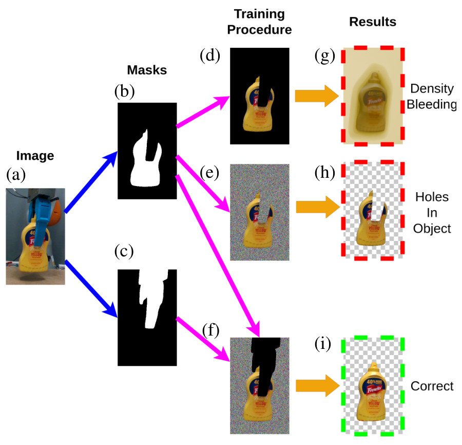
怎么读这张图
- (a) Image，(b)(c) Masks：原始帧，瓶子的 object mask，夹爪的 gripper mask。注意 (b) 里瓶身缺一块，就是被手指挡的地方。
- (d) → (g) Density Bleeding：只用 object mask，背景黑掉不监督，模型把 density 填进空处，瓶子外面裹一层雾。
- (e) → (h) Holes In Object：背景换随机色，雾没了；但手指挡住的缺口也算背景，被推向透明，瓶身破洞。
- (f) → (i) Correct：再用 (c) 把手指区域涂黑排除，不监督也不判透明，别的帧补上这块，瓶子完整。
flowchart TD P["训练时的一个像素"] --> G["在 gripper mask 内
不进 loss"]:::win P --> O["在 object mask 内
正常 photometric loss"] P --> B["其余都是背景
随机色，逼 density 为 0"]:::win
Running example 在这一步
手指挡住瓶身一段 → 这段像素不进 loss → 其他帧手指在别处，这段有监督 → 得到完整瓶子。YCB 瓶的 BundleSDF mesh 对扫描真值 Chamfer 0.93 mm。换成单色 bowl 时再打开 depth supervision。
Stage 3 Collision：visual mesh 拆成 convex pieces textured mesh V → union of convex meshes C
- Why：仿真需要便宜且可算的碰撞几何。
- How：approximate convex decomposition [28], [29] 把 V 拆成近似凸的块，每块取 convex hull。项目页示例用的是 CoACD。
- 副作用：块之间有缝会扭曲 Drake hydroelastic 的 pressure field；块之间重叠会在 point contact 模型里产生内部接触点。
- 作者结论：多数情况够用，尤其配 point contact；更通用的表示留作 future work（比如 GPU 仿真用 sphere 近似）。
flowchart LR a["V
textured mesh"] --> b["Convex decomposition
近似凸的块"] b --> c["C
convex hull 的并集"]
Running example 在这一步
就是 Fig. 1 下方从黄瓶子到灰瓶子那一步。项目页 Visual and Collision Geometry Examples 有 Large Mustard Bottle 的 3D 对照 viewer。
Stage 4 Robot ID：先把空手的机器人辨识准（每个环境一次） excitation trajectory + 10 次执行 → 每个 link 的参数 α
- Why：后面要做减法，空手这一份必须准；力矩读数里还混着摩擦和转子惯量。
- 动力学对参数是 affine 的（Eq. 2），堆叠所有时刻得到线性系统 T = Wα + w₀（Eq. 3）。
- 加物理约束就成 SDP（Eq. 4）：convex，可解到全局最优。实际解的是改过的版本，把 unidentifiable 参数排除出目标，并用 [19] 的 regularization。
- 轨迹设计（Eq. 5）：让 WᵀW 信息足且均匀；轨迹用 finite Fourier series 参数化。
- Solver：自写 augmented Lagrangian，子问题用 black-box optimization。论文说 gradient 法在加碰撞约束后常陷局部最优；它换来更好的解和更长的运行时间，离线每环境一次，可接受。论文没报时间，也没有 solver 对比数字。
- 数据：10 条轨迹，position 和 torque 取平均提信噪比；速度、加速度靠两次差分；全部 low-pass，cutoff 由 hyperparameter search 按 Eq. 4 最小化来定。
- 夹爪开度：在多个开度下各辨识一次机器人，Object ID 时匹配最接近的一份。
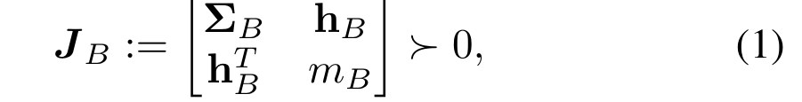
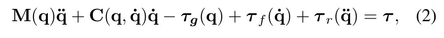
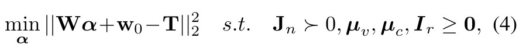
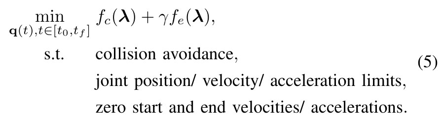
| 符号 | 白话 | 在这条流水线里 |
|---|---|---|
q, q̇, q̈ | 关节角、角速度、角加速度 | 只测 q，后两个靠差分 |
τ | 关节力矩 | joint-torque sensors 读数 |
M, C, τ_g | 质量矩阵、科氏和陀螺项、重力项 | 标准 manipulator equations |
τ_f, τ_r | 关节摩擦力矩、转子反射惯量力矩 | 也要一起辨识，否则污染力矩 |
α | 全部待辨识参数 | 13N 维。每 link 10 个 inertial + 3 个（μ_v, μ_c, I_r）是我的拆分；7 关节则 91 维，是我的推算 |
T, W, w₀ | 堆起来的力矩、由轨迹算出的 regressor、与 α 无关的项 | w₀ 论文没单独解释，这是我的读法 |
J_B / J_n | pseudo-inertia，把 mass、一阶矩、惯量拼成的矩阵 | 正定 ⇔ 物理上可行 |
μ_v, μ_c, I_r | viscous、Coulomb 摩擦系数，reflected rotor inertia | 这里只是关节摩擦，不是物体接触摩擦 |
λ | WᵀW 的特征值 | 每个方向上的信息量 |
f_c, f_e, γ | 条件数 √(λmax/λmin)、E-optimality −λmin、两者权重 | γ 论文未报 |
怎么读这些式子
- Eq. 2：电机要出的力矩，等于让手臂加速、抵重力、抵摩擦、带转子所需之和。
- Eq. 4：找一组参数最能解释测到的力矩，同时每个 link 物理可行（
J_n正定），摩擦和转子惯量非负。 - Eq. 5：选一条轨迹，让最差方向的信息尽量大、各方向尽量均匀，同时不撞、不超限、首尾静止。
flowchart LR a["Eq. 5 设计轨迹
Fourier + 碰撞约束"] --> b["执行 10 次
平均 q, τ，low-pass"] b --> c["Eq. 4 SDP
空手参数 α"]
Running example 在这一步
此时瓶子还没出场：手里什么都没有，只存下“空手的机器人”和那条 excitation trajectory，每种夹爪开度一份。后面每个物体都复用。
Stage 5 Object ID：带着物体再辨识最后一个 link，做减法 同一条轨迹的 q, τ + 空手参数 + mesh → m, CoM, I（object frame）
- Why：物体被夹紧后和最后一个 link 合成一个刚体，而 lumped parameters 是线性可加的（Eq. 6）。
- 只重估 last link：带物体走一遍，单条轨迹（for practicality），比 Stage 4 的 10 条平均更吵。
- 同一条轨迹：专门为 last link 设计的轨迹反而效果差；同轨迹还能抵消相减时的系统误差。
- 差值约束：可行集对加法封闭、对减法不封闭。小物体质量落进误差范围时会减出负质量，所以对差值 p 也加
J_p ≻ 0。 - 转到 object frame：ICP 对齐 point cloud 和已知抓取位置到重建 mesh（这步用到 Stage 2 的结果）。
- 假设：rigid grasp，slippage 留作 future work。
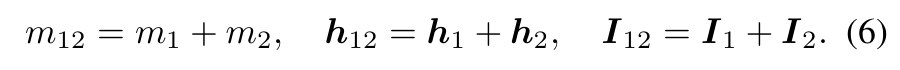
| 符号 | 白话 | 芥末瓶上的值 |
|---|---|---|
m₁, m₂, m₁₂ | last link、物体、两者合体的质量 | m₂ 真值 427.1 g |
h = m · p^com | 质量乘质心，一阶矩 | 相加的是它，不是质心本身 |
I₁, I₂, I₁₂ | 转动惯量矩阵 | 论文未给瓶子的矩阵 |
p | 差值参数集，也就是物体 | 约束 J_p ≻ 0 |
这里的 J_p ≻ 0 只保证结果物理上可行，不保证接近真值（我的说明）。E4 的 358.6 % 就是可行但不准的例子。
flowchart LR a["带瓶走同一轨迹
last link + 瓶子"] --> b["减空手 last link
加 J_p ≻ 0"] b --> c["ICP 转 object frame
m, CoM, I"]
Running example 在这一步
3D 打印瓶，真值 427.1 g：mass 误差 1.23 %（约 5 g，我的换算），CoM 6.33 %，rotational inertia 358.6 %（§V-B）。
Stage 6 Asset + place：合成文件，放下，抓下一个 V + C + P → 一个可导入 simulator 的描述文件
- 输出：Fig. 1 写 URDF；项目页示例是 Drake 用的 SDF。
- 循环：放进第二个 bin，抓下一个，直到第一个 bin 空。
- 数据集：20 个 asset，含生成它们用的原始传感器数据（§I），不用机器人也能改进 tracking、重建或 inertia 估计。
- 自主运行：项目页有 Full Pipeline Video，连续 39 分钟，补料时有短暂停顿。论文没报每个物体耗时。
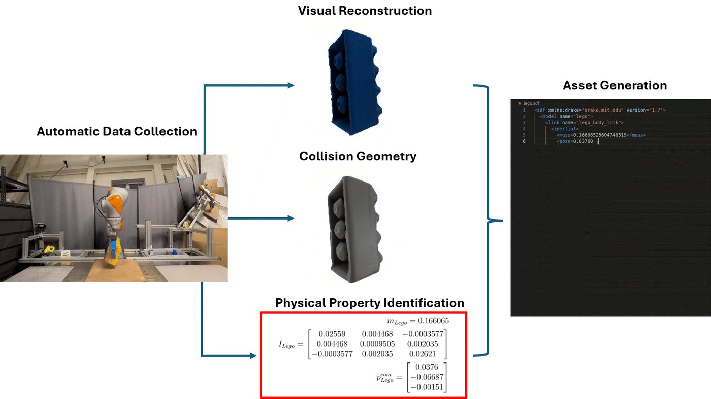
lego.sdf。Running example 在这一步
瓶子的 mesh、convex pieces 和三个物理量写进一个文件，实物放进左 bin，机器人回右 bin 抓下一个。
Recap：例子覆盖了论文的哪些 idea
| 论文里的 idea | 例子里在哪体现 |
|---|---|
| 两轴旋转 + grasp pair | Stage 1：瓶子换一次抓取，底面露出 |
| DINO 选帧、SAM2 两种 mask | Stage 1：N 帧，每帧瓶子和夹爪各一张 mask |
| Object frame 当 world frame | Stage 2：相机不用标定，位姿来自跟踪瓶子 |
| Alpha-transparent training | Stage 2：瓶子外的雾消失（Fig. 3 g→h） |
| Gripper mask 区分遮挡和背景 | Stage 2：瓶身不破洞（Fig. 3 h→i） |
| Depth supervision | Stage 2：瓶子有纹理用不上，换成单色 bowl 时才打开 |
| Convex decomposition | Stage 3：黄瓶子变灰色 convex 形状 |
| Physically consistent SDP | Stage 4：空手参数，每个 link 正定 |
| Excitation design + black-box solver | Stage 4：一条轨迹，所有物体复用 |
差分 + J_p ≻ 0 | Stage 5：瓶子 = 合体 − last link |
| 夹爪开度匹配、ICP | Stage 4 存多份，Stage 5 选最接近的并转到 object frame |
| 全自动循环、20 件数据集 | Stage 6：放下瓶子，抓下一个 |
Results
几何到 mm 级，mass 和 CoM 到百分之几，inertia 不可靠，仿真只有定性证据
顺序同论文 §V：E1 几何多准 → E2 几何是否完整、能否用 → E3 不加腕部传感器能否辨识惯性 → E4 整条流水线走下来还剩多少精度 → E5 asset 在仿真里行为对不对。比的是误差，没有任务成功率，也没有用 asset 训练或部署 policy。
E1扫出来的几何有多准？§V-A
| YCB 物体 | Chamfer distance |
|---|---|
| Gelatin box | 0.80 mm |
| Mustard bottle | 0.93 mm |
| Potted meat can | 1.68 mm |
| Bleach cleanser | 5.58 mm |
由 §V-A 正文数字整理，论文没有这张表。
- 说明什么
- 毫米级。四件里三件在 2 mm 内，bleach cleanser 5.58 mm。没有 baseline。
- 在故事里
- 证明夹在手里转的扫描方式能得到可用的几何。
- 指标
- 重建 mesh 与 YCB 3D 扫描模型之间的 Chamfer distance。
- 怎么评测
- 只测了 4 件 YCB 物体（数据集共 20 件），且只测 BundleSDF 的 mesh。
- 所以论文主打的 alpha-transparent recipe 没有 Chamfer 数字，证据只有 Fig. 3 和 Fig. 7（我的阅读）。
- 作者提醒：产品尺寸若变过，误差会被虚高。
E2几何是否完整、mesh 能否直接用？§V-A，Fig. 5–7
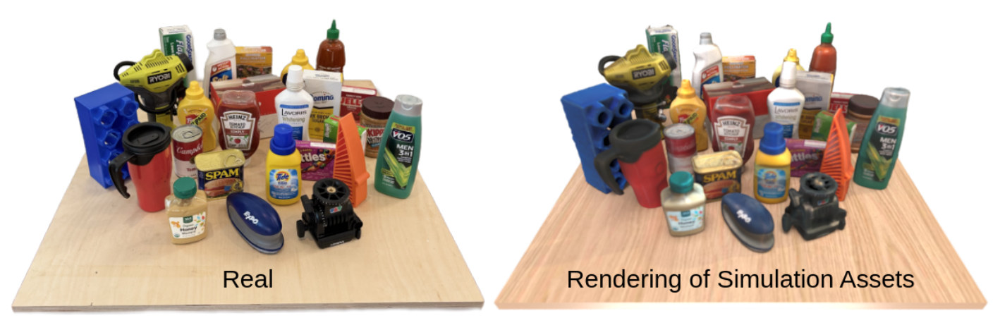
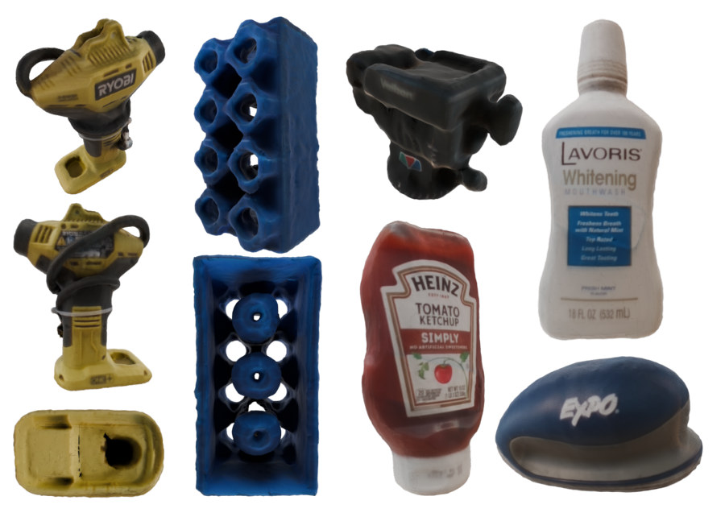
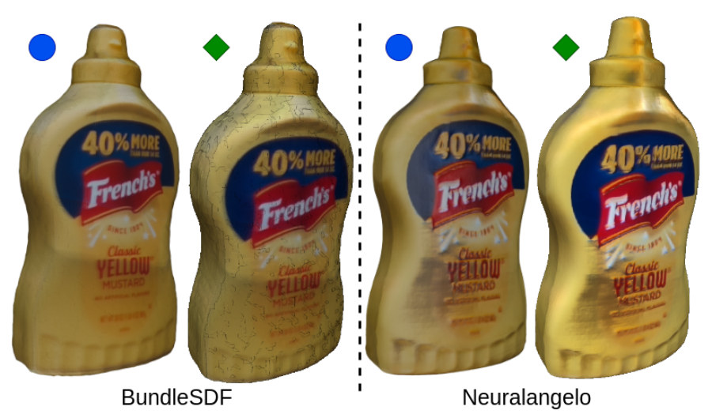
- 说明什么
- 完整，但 BundleSDF 拓扑差。底面这类只有动手才看得到的部位也重建出来了；BundleSDF 有 scattered boundary faces 和 non-manifold vertices，Neuralangelo 在两个渲染器里都稳定。
- 在故事里
- 说明 recipe 的价值：换一个更好的 backend 就能修掉 BundleSDF 的 mesh 问题。
- 指标
- 定性，无数字。
- 怎么评测
- 同一芥末瓶，两种重建，两种渲染器。
- 要 watertight mesh 的 simulator 可能吃不下 BundleSDF 的结果（作者原话）。
E3只靠 joint torque，能不能辨识已知惯性的物体？§V-B，Table I
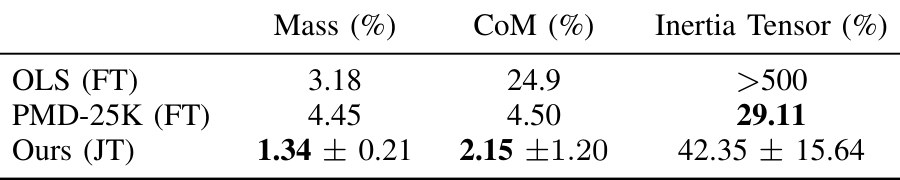
- 说明什么
- mass 和 CoM 更准，inertia 更差。Ours mass 1.34 ± 0.21 %、CoM 2.15 ± 1.20 %，好于 PMD-25K 的 4.45 %、4.50 %。Inertia 42.35 ± 15.64 %，差于 PMD-25K 的 29.11 %。三项都好于 OLS（3.18 %、24.9 %、>500 %）。
- 在故事里
- 证明不装腕部传感器、不要物体先验，也能做 payload identification。
- 指标
- [17] 提出的三个百分比误差，本文没写公式。Error bar 是一个标准差。
- 怎么评测
- 复刻 [17] 的 test object，8 种已知惯性配置 × 3 次，24 次取平均。
- 测试物直接固定在 last link 上：这里没有抓取、没有夹爪开度变化、没有 ICP，比真实流程容易。
- OLS、PMD-25K 是 [17] 报告的数字，不是同台复跑。
- 论文说 inertia “slightly worse”；按表约差 1.45 倍（我的换算），29.11 落在 Ours 一个标准差以内。
E4真抓真扫走完全程，精度还剩多少？§V-B
| 条件 | Mass | CoM | Inertia |
|---|---|---|---|
| E3：测试物固定在 last link，24 次 | 1.34 ± 0.21 % | 2.15 ± 1.20 % | 42.35 ± 15.64 % |
| E4：3D 打印芥末瓶，走完整 pipeline | 1.23 % | 6.33 % | 358.6 % |
由 Table I 和 §V-B 正文整理，论文没有这张对照表。两行不是同一物体，不是受控对比。
- 说明什么
- mass 没掉，CoM 约差 3 倍，inertia 约差 8.5 倍（倍数是我的换算）。真值 427.1 g。这是全文唯一一次把抓取、重建和辨识串起来的定量检验，所以更接近真实 asset 的精度（后半句是我的判断）。
- 在故事里
- 证明流水线端到端能给 mass 和 CoM；作者承认 inertia 误差 “notably high”。
- 指标
- 同 [17] 的百分比误差；真值来自 3D 打印件的已知 inertia。
- 怎么评测
- 只有一件物体；论文没报重复次数，没有 error bar。
- 作者把误差归因于 camera calibration errors 和 joint-torque sensing 的极限，但没有做 ablation 区分。
- 论文只报误差，没报瓶子的 CoM 和 inertia 绝对值。
我的粗算，不是论文结论：项目页头图的 Lego（Stage 6 那张）给 m = 0.166065，I 对角 0.02559 / 0.0009505 / 0.02621，p_com = (0.0376, −0.06687, −0.00151)，页面没写单位和参考点。按 kg、m 读，用项目页 lego.glb 量到外形约 20.3 × 10.5 × 9.3 cm，同尺寸实心盒绕中心的最大惯量约 0.0007 kg·m²，页面值大约 36 倍；把 m|p|² 全加上也还大约 15 倍。这和 358.6 % 同一方向：这批 asset 的 inertia 不要直接当真。
E5asset 放进仿真，行为像真物吗？§V-C，Fig. 8，项目页
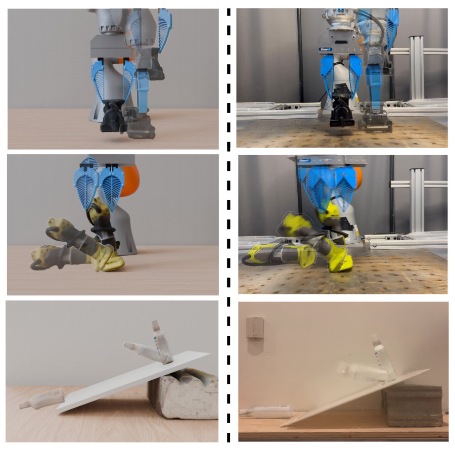
- Inflator：Real 和 Identified 都向左倒下平躺；Default 倒得更晚，落地姿态不同。
- Mouthwash：Real 和 Identified 落上斜面就翻倒、躺着滑到底；Default 一直立着慢慢挪下去。Identified 到底比 Real 快。
- 读法：两个 Sim 栏 mass 相同，差别只来自 CoM 和 inertia；Default 同时去掉两者，分不出哪个起作用。
这三条是我看视频的观察，论文和项目页都没有这样描述。
- 说明什么
- 只有定性证据，没有 sim-vs-real 数字。Asset 能直接导入 Drake 运行。
- 在故事里
- 支撑 “simulation-ready” 这个说法，但没有量化。
- 指标
- 无。作者说单条 rollout 对初值太敏感，稳妥做法是比 rollout 分布；equation error 需要精确状态估计，超出本文范围。
- 怎么评测
- Pick-and-place、knocking over、ramp，单次对照。
- 论文没写仿真用的 friction，也没报次数。
Limits
局限和开放问题
- 作者承认：不估计 contact parameters，也就是说物体的 friction 还是空着（§III-D，“important future work”）。
- 作者承认：只做 rigid objects，假设 rigid grasp，slippage 留作 future work。
- 作者承认：rotational inertia 误差很高（42.35 %，端到端 358.6 %）。
- 作者承认：convex pieces 的缝和重叠会造成动力学伪影；BundleSDF mesh 拓扑差，要 watertight 的 simulator 可能有问题。
- 作者承认：仿真没有定量评估。
- 硬件前提：要有 joint-torque sensors 或腕部 F/T，只在一台 iiwa 上验证过；小物体的质量可能落进误差范围（§III-D），但论文没报最小可测质量。
- 未报告（我的阅读）：每件耗时、excitation 求解时间、K 和 N、γ、solver 对比、recipe 的量化精度、误差指标公式。
For Agent-centric real-to-sim
对我们有什么用
- Mass 和 friction：r2s-lite 现在用
sim.density_kg_m3: 300乘网格体积算 mass，friction 假设[0.6, 0.5]。这篇说明 mass 和 CoM 可测，friction 它也没解决，inertia 不值得信。但它要 joint torque、设计过的 excitation 轨迹和同轨迹的空手基线，录好的 episode 都没有（我们的 episode 格式无 torque，ABC reader 读出的.torque没进 loader），所以这是真机新步骤，不是能加到 DROID 回放上的工具。 - Sim-to-real 证据：这篇同样没有定量证据，它不能补我们的缺口。但 §V-C 的提醒直接适用：单条 rollout 对初值敏感，而 r2s-lite 的 replay 正是单条。可抄的是项目页的 Identified vs Default 对照：同一 replay 换 CoM 和 inertia，先看我们的假设值会不会改变判决。
- 相机位姿：它把 object frame 当 world frame，重建物体自身的 mesh 时不需要相机外参。对我们约 20 cm 的 DROID 相机误差只帮一半：物体要被转遍全身才行，录制视频一般做不到。作者把 358.6 % 部分归因于 camera calibration，但没有 ablation；若属实，标定误差也会污染物理量（这两句是我的推断）。